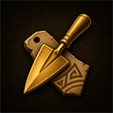

Collection progress
Record damaged and restored artefacts across collectors and museum sets.

ArchaeologyCollections Add to Alt1A focused Archaeology companion
Keep every collection, required material, XP reward and chronote total together—without an account or spreadsheet.
Your working archive
Changes are saved automatically in this browser. No sign-in required.
COLLECTION PLANNER
Built for the full dig
Record damaged and restored artefacts across collectors and museum sets.
See the exact materials required for one collection or your complete restoration queue.
Calculate restoration XP, outfit-adjusted XP, chronotes and completed set bonuses.
Private by default
Artefact counts are stored in your browser's local storage. This works like persistent website cookies, but has enough room for the full tracker and is never sent to this website. Use Export if you want to move progress to another browser or domain.